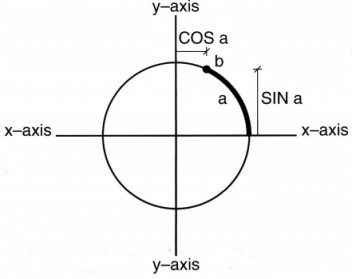

This Chapter provides a full explanation of using standard mathematical and trigonometric functions, as well an insight into how AMOS Professional exploits numbers.
Arithmetical calculations
Nothing could be simpler than asking AMOS Professional to run this sum:
D> Print 2+2
Arithmetical operations are straightforward, provided the correct symbols are used, as follows:
+ the plus sign always signals addition
- the minus sign is used for subtraction
* for multiplication, an asterisk character must be used
/ divisions are made using the forward-slash symbol
^ the circumflex character is used as the exponential symbol, and it means "raise this number to a given power", which is exactly the same as multiplying a number with itself.
So the following two lines are interchangable:
D> Print 3^5 Print 3*3*3*3*3
The following logical operations can also be used in calculations:
MOD is the "modulo" operator, which acts as a constant multiplier. AND, OR and XOR are the three logical operations.
Calculation priorities
Arithmetical instructions are taken literally, using a set of built-in priorities. So the
following lines give the results 6 and 8 respectively:
D> Print 2+2*2 Print (2+2)*2
AMOS Professional handles a combination of calculations that make up an "expression" in the following strict order of priority:
Any calculation placed inside a pair of round brackets is evaluated first, and treated as a single number.
The next calculation gives a result of 43, because it evaluated in the following order:
D> Print 10+2*5-8/4+5^2
5^2 = 25
2*5 = 10
8/4 = 2
10+10 = 20
20-2 = 18
18+25 = 43
By adding two strategic pairs of brackets to the same calculation, the logical interpretation is transformed, resulting in an answer of 768, like this:
D> Print (10+2)*(5-8/4+5)^2
10+2 = 12
5-8/4+5 = 5-2+5
5-2+5 = 8
8^2 = 64
12*64 = 768
Fast calculations
There are three instructions that can be used to speedflip the process of simple calculations.
INC
instruction: increment an integer variable by 1
Inc variable
This command adds 1 to an integer (whole number) variable, using a single instruction to perform the expression variable=variable+1 very quickly. For example:
D> V=10 : Inc V : Print V
DEC
instruction: decrement an integer variable by 1
Dec variable
Similarly to INC, the DEC command performs a rapid subtraction of 1 from an integer variable. For example:
D> V=10 : Dec V : Print V
ADD
instruction: perform fast integer addition
Add variable,expression
Add variable,expression,base To top
The ADD command can be used to add the result of an expression to a whole number variabk. immediately. It is the equivalent to variable=variable+ expression but performs the addition nearly twice as fast.
There is a more complex version of ADD, which is ideal for handling certain loops much more quickly than the equivalent separate instructions. When Base number and Top number parameters are included, ADD is the equivalent to the following lines:
X> V=V+A If V<BASE Then V=TOP If V>TOP Then V=BASE
Here is an example:
E> Dim A(10)
For X=0 To 10:A(X)=X:Next X
V=0
Repeat
Add V,1,1 To 10
Print A(V)
Until V=11 : Rem This loop is infinite as V is always <11
Relative values
It is obvious that every expression has a value, but expressions are not restricted to
whole numbers (integers), or any sort of numbers. Expressions can be created from real numbers
or strings of characters. If you need to compare two expressions, the following functions are
provided to examine them and establish their relative values.
MAX
function: return the maximum of two values
value=Max(a,b)
value#=Max(a#,b#)
value$=Max(a$,b$)
MAX compares two expressions and returns the largest. Different types of expressions cannot be compared in one instruction, so they must not be mixed.
Here are some examples:
D> Print Max(99,1)
Print Max("AMOS Professional","AMOS")
MIN
function: return the minimum of two values
value=Min(a,b)
value#=Min(a#,b#)
value$=Min(a$,b$)
Similarly, the MIN function returns the smaller value of two expressions. Expressions can consist of strings, integers or real numbers, but only compare like with like, as follows:
D> A=Min(99,1) : Print A
Print Min("AMOS Professional","AMOS")
Values and signs
Any number can have one of three values: negative, positive or zero, and these are represented
by the "sign" of a number.
SGN
function: return the sign of a number
sign=Sgn(value)
sign=Sgn(value#)
The SGN function returns a value representing the sign of a number. The three possible results are these:
-1 if the value is negative 1 if the value is positive 0 if the value is zero
ABS
function: return an absolute value
a=Abs(value)
a=Abs(value#)
This function is used to convert arguments into a positive number. ABS returns an absolute value of an integer or fractional number, paying no attention to whether that number is positive or negative, in other words, ignoring its sign.
For example:
D> Print Abs(-1),Abs(1)
Floating point numbers
Numbers that consist of many digits either side of a decimal point can often give very
messy results in Basic programming. The movement of the decimal point slows down the processing,
and levels of accuracy may be too great for your needs.
INT
function: convert floating point number into an integer
integer=Int(number#)
The INT function rounds down a floating point number to the nearest whole number (integer), so that the result of the following two example lines is 3 and -2, respectively:
D> Print Int(3.9999) Print Int(-1.1)
FIX
instruction: fix precision of floating point
Fix(number)
The FIX command changes the way floating point numbers are displayed on screen, or output to a printer. The precision of these floating point numbers is determined by a number (n) that is specified in brackets, and there can be four possibilities, as follows:
Here are some examples:
E> Fix (2) : Print Pi# : Rem Two digits after decimal point Fix(-4) : Print Pi# : Rem Exponential with four digits after decimal point Fix(16) : Print Pi# : Rem Revert to normal mode
Single and double precision
Although the standard floating point system is perfect for general use, it may not be
accurate enough for genuine scientific applications, or advanced simulations. AMOS Professional
offers a choice of two separate calculation systems.
Single Precision
This is the default mode, and is automatically used whenever an AMOS Professional
program is RUN. Single precision is accurate to about seven decimal digits, it is very fast
and it is ideal for the vast majority of applications.
Double precision
Double precision mode offers double the normal degree of accuracy, and is capable of
dealing with extremely precise values. Unlike most pocket calculators, AMOS Professional double
precision can handle numbers with up to 16 significant digits.
This extent of accuracy will consume twice as much memory as the standard version, and it will also cause a great slowing down of calculations. It should only be used when extra accuracy is absolutely vital.
SET DOUBLE PRECISION
instruction: engage double precision accuracy
Set Double Precision
Double precision should be set at the start of your program, and all floating point calculations will be performed using the more accurate mode. Because the two modes are completely separate, single precision and double precision modes cannot be mixed in the same program.
Standard mathematical functions
SQR
function: calculate square root
square=Sqr(number)
square#=Sqr(number#)
This function calculates the square root of a positive number, that is to say, it returns a number that must be multiplied by itself to give the specified value. For example:
D> Print Sqr(25) Print Sqr(11.1111)
EXP
function: calculate exponential
exponential#=Exp(value#)
Use the EXP function to return the exponential of a specified value. For example:
D> Print Exp(1)
LOG
function: return logarithm
a=Log(value)
a#=Log(value#)
LOG returns the logarithm in base 10 (log 10) of the given value. For example:
E> Print Log(10) A#=Log(100)
LN
function: return natural logarithm
a#=Ln(value#)
The LN Function calculates the natural logarithm (Naperian logarithm) of the given value. For example:
E> Print Ln(10) A#=Ln(100) : Print A#
Trigonometry
The AMOS Professional trigonometric functions are often used for calculating angles,
creating graphic design effects, calculating trajectories in gameplay, as well as making intricate
musical wave forms.
Pi#
function: return a constant &pi
p#=Pi#
Pi is the Greek letter it that is used to summon up a number which begins 3.141592653 and on for ever. This number is the ratio of the circumference of a circle to its diameter, and it is used in trigonometry as the tool for calculating aspects of circles and spheres. Note that in order to avoid clashes with your own variable names, a # character is part of the token name. The PI# function gives a constant value of Pi in your calculations.
In the following diagram of a circle, a point is moved from the right hand side of the x-axis up along the perimeter for a distance a, stopping at position b.
In conventional trigonometry, a circle is divided into 360 degrees, so a defines the number of degrees in the angle between the x-axis and the line from the centre of the circle to point b. However, your Amiga uses a default by which it expects all angles to be given in "radians" and not degrees.
DEGREE
instruction: use degrees
Degree
If, for any reason, you are unhappy with the complexities of radians, AMOS Professional is happy to accept your trigonometric instructions in degrees. Once the DEGREE command has been activated, all subsequent calls to the trigonometric functions will expect degrees to be used.
E> Degree Print Sin(45)
RADIAN
instruction: use radians
Radian
If DEGREE has already been called, the RADIAN function returns to the default status, where all future angles are expected to be entered in radians.
SIN
function: calculate sine of an angle
s#=Sin(angle)
s#=Sin(angle#)
The SIN function calculates how far point b is above the x-axis, known as the sine of
the angle a.
Note that SIN always returns a floating point number. For example:
E> Degree
For X=0 To 319
Y#=Sin(X)
Plot X,Y#*50+100
Next X
COS
function: calculate cosine of an angle
c#=Cos(angle)
c#=Cos(angle#)
In the above diagram, the distance that point b is to the right of the y-axis is known
as the cosine. If b goes to the left of the y-axis, its cosine value becomes negative. (Similarly,
if it drops below the x-axis, its sine value is negative.) The COS function gives the cosine of a
given angle.
To demonstrate this, add the following two lines to your last example between the PLOT and
NEXT instructions:
E> Y#=Cos(X) Plot X,Y#*50+100
TAN
function: calculate tangent of an angle
t#=Tan(angle)
t#=Tan(angle#)
For any angle, the tangent is the result of when its sine is divided by its cosine. The TAN function generates the tangent of a given angle. For example:
E> Degree : Print Tan(45) Radian : Print Tan(Pi#/8)
ACOS
function: calculate arc cosine
a#=Acos(number#)
The ACOS function takes a number between -1 and +1, and calculates the angle which would be needed to generate this value with COS. For example:
E> A#=Cos(45) Print Acos(A#)
ASIN
function: calculate arc sine
a#=Asin(number#)
Similarly to ACOS, the ASIN function calculates the angle needed to generate a value with SIN.
ATAN
function: calculate arc tangent
a#=Atan(number#)
ATAN returns the arctan of a given number, like this:
E> Degree : Print Tan(2) Degree : Print Atan(0.03492082)
A hyperbola is a conical section, formed by a plane that cuts both bases of a cone. In other words, an asymmetrical curve. Wave forms and trajectories are much more likely to follow this sort of eccentric curve, than perfect arcs of circles. The hyperbolic functions express the relationship between various distances of a point on the hyperbolic curve and the coordinate axes.
HSIN
function: calculate hyperbolic sine
h#=Hsin(angle)
h#=Hsin(angle#)
The HSIN function calculates the hyperbolic sine of a given angle.
HCOS
function: calculate hyperbolic cosine
h#=Hcos(angle)
h#=Hcos(angle#)
Use this function to find the hyperbolic cosine of an angle.
HTAN
function: calculate hyperbolic tangent
h#=Htan(angle)
h#=Htan(angle#)
HTAN returns the hyperbolic tangent of the given angle.
Random numbers
The easiest way to introduce an element of chance or surprise into a program is to throw
some numbered options into an electronic pot and allow AMOS Professional to pull one out at
random. After a number has been selected and used, it is thrown back into the pot once
again. It then has the same chance as any other number offered for selection, when the next random
choice is made.
RND
function: generate a random number
value=Rnd(number)
The RND function generates integers at random, between zero and any number specified in brackets. If your specified number is greater than zero, random numbers will be generated up to that maximum number. However, if you specify 0, then RND will return the last random value it generated. This is useful for debugging programs. Here is an example:
E> Do
C=Rnd(15) : X=Rnd(320) : Y=Rnd(200)
Ink C : Text X,Y,"AMOS Professional at RANDOM"
Loop
RANDOMIZE
instruction: set the seed for a random number
Randomize seed
In practice, the numbers produced by the RND function are not genuinely random at all. They are computed by an internal mathematical formula, whose starting point is taken from a number known as a "seed". This seed is set to a standard value whenever AMOS Professional is loaded into your Amiga, and that means that the sequence of numbers generated by the RND function will be exactly the same each time your program is run.
This may well be acceptable for arcade games, where pre-set random patterns generated by RND can be used to advantage, but it is a useless system for more serious applications.
The RANDOMIZE command solves this problem by setting the value of the seed directly. This seed can be any value you choose, and each seed will generate an individual sequence of numbers. RANDOMIZE can also be used in conjunction with the TIMER variable, to generate genuine random numbers.
TIMER
reserved variable: count in 50ths of a second
v=Timer
Timer=v
The TIMER reserved variable is incremented by 1 unit every 50th of a second, in other words, it returns the amount of time that has elapsed since your Amiga was last switched on. As explained above, this makes it a perfect "seed" to be used with the RANDOMIZE function, as follows:
X> Randomize Timer
The best place to use this technique is immediately after the user has entered some data into the computer. Even a simple key-press to start a game will work perfectly, and generate truly random numbers.